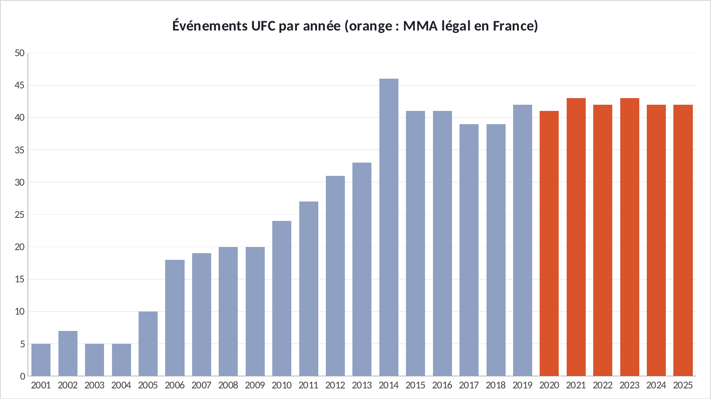
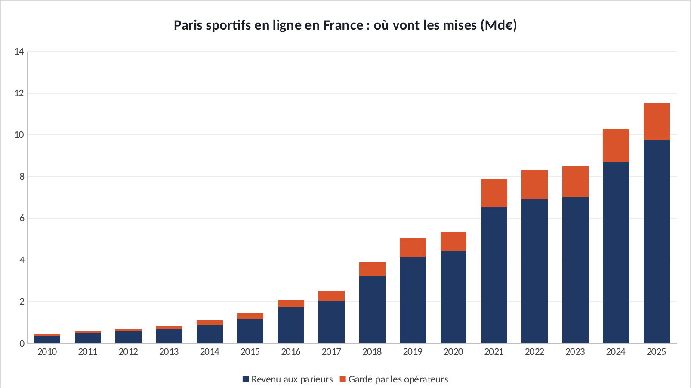
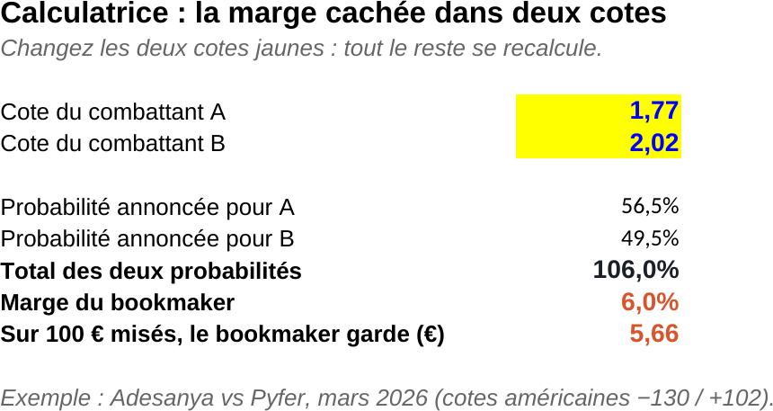
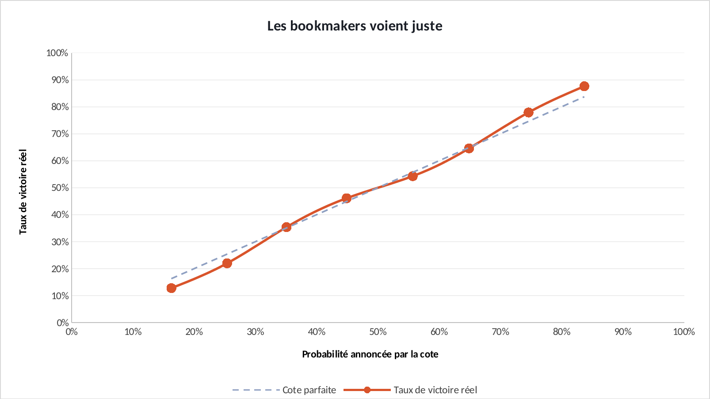
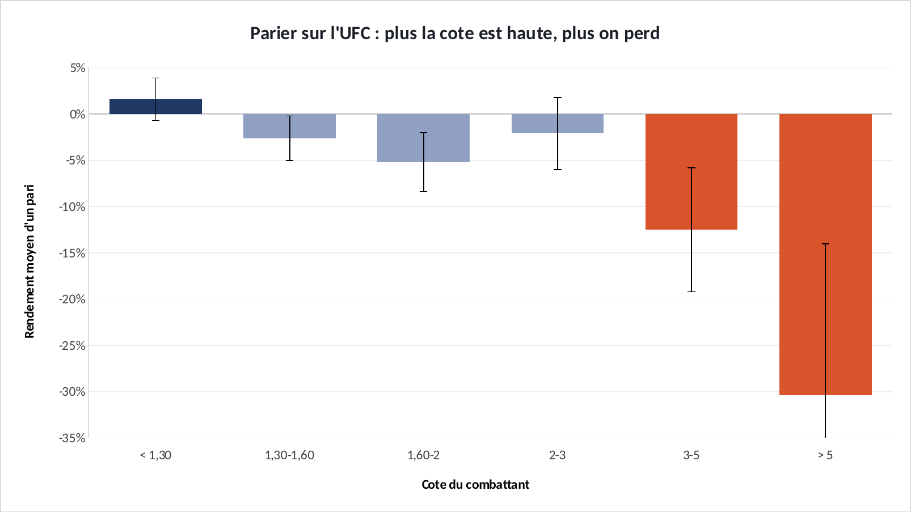
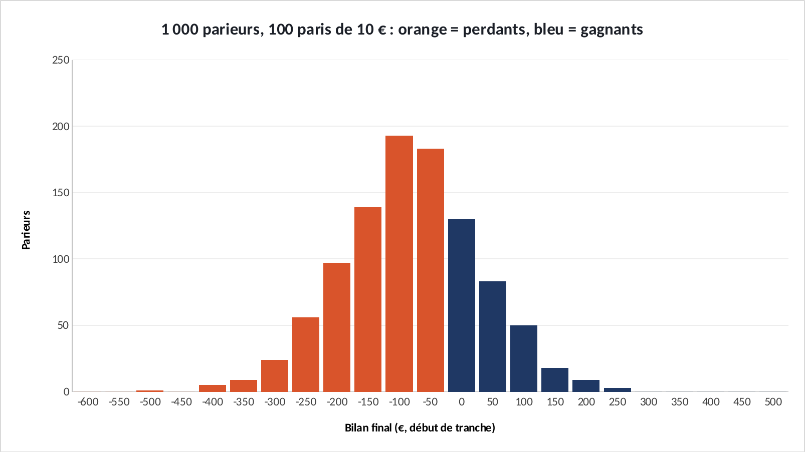
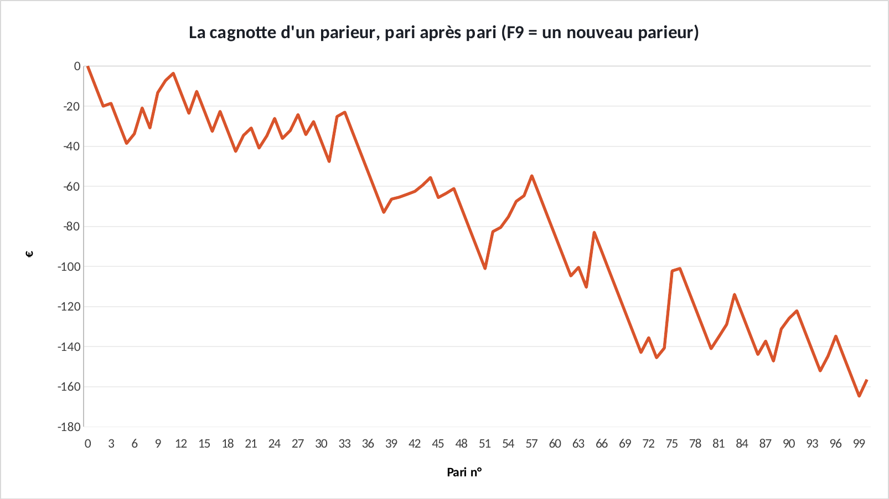

Étude · Sports de combat × paris sportifs
Le bookmaker gagne toujours. Même au MMA.
Le MMA est légal en France depuis 2020, les paris sportifs battent des records chaque année. J'ai repris les cotes de 6 916 combats UFC pour voir qui gagne vraiment.
En 30 secondes
- Deux marchés ont explosé en même temps en France : le MMA (légal depuis 2020, l'UFC à Paris chaque année depuis 2022) et les paris sportifs en ligne (10,3 milliards d'euros misés en 2024).
- Les cotes UFC sont remarquablement justes : quand un combattant est donné à 65 %, il gagne 65 % du temps.
- Mais chaque cote cache une marge d'environ 3,7 %. Toujours le favori, toujours l'outsider, au hasard : tout perd. Seule exception, les très gros favoris, tout juste rentables, le pari que presque personne ne fait, parce qu'il ne fait pas rêver.
- Sur 10 000 parieurs simulés, 31 % finissent gagnants. Ce sont eux qu'on entend. C'est là que le marketing fait le reste.
01 · Le contexteDeux courbes qui montent ensemble
- Janv. 2020Le MMA devient légalen compétition en France, sous l'égide de la Fédération française de boxe.
- 2021Premiers paris MMA autoriséspar l'ANJ, le régulateur des jeux, compétition par compétition.
- Sept. 2022Premier UFC à ParisGane vs Tuivasa. Il revient chaque mois de septembre depuis : 5 éditions.
- 2024Record des paris sportifs10,3 Md€ misés en ligne (+21 %), 4,9 millions de comptes actifs.

Source : ufcstats.com · ANJ, bilan du marché 2024 · ministère des Sports
Et le public des paris colle à celui du MMA : selon les données de l'ANJ, 64 % des parieurs sportifs ont entre 18 et 34 ans. Un sport qui monte, une audience jeune, une offre de paris qui s'ouvre : c'est un marché. La question, c'est pour qui.
02 · L'argent70 milliards misés. Où sont-ils passés ?
Depuis l'ouverture du marché en 2010, les Français ont misé 70,5 milliards d'euros en paris sportifs en ligne. 58,6 milliards sont revenus aux parieurs sous forme de gains. Les opérateurs ont gardé le reste : 11,9 milliards, soit 17 % de chaque euro misé.

Sources : ARJEL (2010-2018), ANJ (2020-2025) · 2019 : mises déduites de la hausse publiée en 2020 · 2024 : chiffre révisé par l'ANJ
« Gagné » ne veut pas dire « en bénéfice » : les 58,6 milliards redistribués comprennent les mises que les gagnants récupèrent. Collectivement, les parieurs ont perdu 11,9 milliards. Et le MMA n'a pas de ligne à lui dans ces chiffres : il est rangé avec les « autres sports », loin derrière le football, le tennis, le basket et le rugby (87,5 % des mises en 2024).
03 · Le mécanismeOù se cache la marge du bookmaker
Une cote, c'est une probabilité déguisée : une cote de 2,00 veut dire « une chance sur deux ». Sur un combat, les deux probabilités devraient faire 100 %. Elles font toujours un peu plus. Ce qui dépasse, c'est la part du bookmaker. Dans l'onglet Calculatrice du fichier Excel, on change deux cotes et la marge se recalcule :

Sur les 6 916 combats de l'étude, cette marge vaut 3,7 % en médiane. Quel que soit le vainqueur, le bookmaker a déjà gagné.
04 · La précisionLes bookmakers voient juste

Source : Ultimate UFC Dataset · 6 916 combats, 2010–2026 · marge retirée
Les points collent à la diagonale. Le favori gagne 66,6 % des combats, presque exactement ce que les cotes annoncent. Pour battre le bookmaker, il faudrait voir mieux que lui. Les données disent que c'est très rare.
05 · Le rendementCe que rapporte 1 € misé, selon la cote

Source : Ultimate UFC Dataset · trait fin = marge d'erreur à 95 %
Plus la cote est haute, plus on perd : −30 % sur les gros outsiders (cote au-dessus de 5). Les parieurs surpayent l'espoir du gros coup, et les bookmakers ajustent leurs prix en conséquence.
Le revers de ce biais : les très gros favoris (cote sous 1,30) sont légèrement sous-cotés. Ils rapportent +1,6 %, et ce chiffre reste à peu près stable sur 15 ans. Mais la marge d'erreur (± 2,3 %) inclut zéro, et à une cote de 1,20, une seule surprise efface cinq victoires. C'est le pari le plus ennuyeux du catalogue. Celui que presque personne ne fait.
06 · La simulation1 000 parieurs, dans Excel
Dans le fichier Excel, 1 000 parieurs font chacun 100 paris de 10 € sur de vrais combats tirés au hasard, avec leurs vraies cotes et leurs vrais résultats. 100 000 tirages, rien que des formules (ALEA.ENTRE.BORNES et INDEX). Chaque appui sur F9 relance tout.


Avec assez de paris, la courbe finit presque toujours sous zéro. Avec peu de paris, la chance domine : beaucoup de joueurs gagnent au début. C'est exactement ce qui rend le produit si efficace.
07 · Et alors ?Ce que ça m'apprend sur le marketing
08 · LimitesCe que cette étude ne dit pas
Jouer comporte des risques : endettement, dépendance… Appelez le 09 74 75 13 13 (appel non surtaxé). Cette étude n'incite pas à parier, elle fait l'inverse.